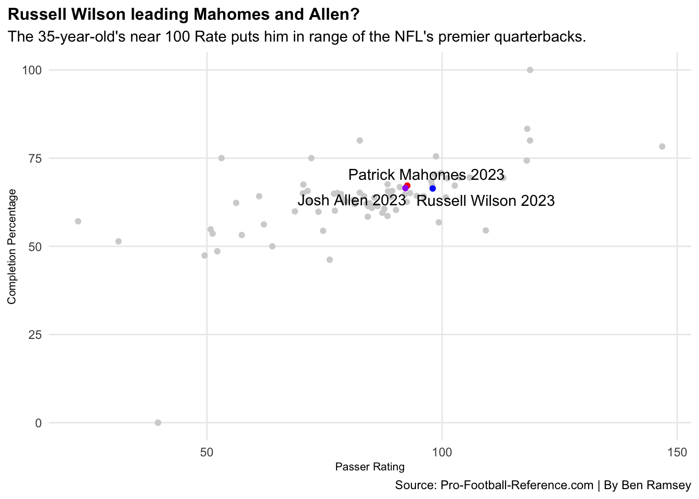
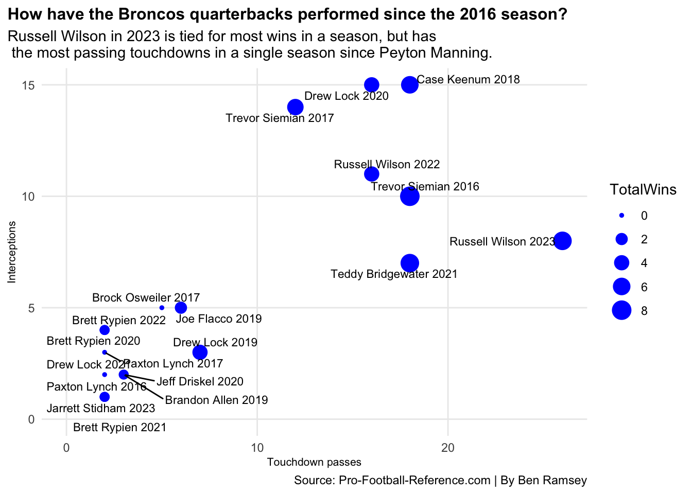

Is Russell Wilson the best Broncos quarterback since Peyton Manning?
broncos
quarterback
data
Author
Ben Ramsey
Published
April 14, 2024
Denver Broncos fans haven’t had much to cheer for since the franchise’s Super Bowl 50 win in 2016. The franchise has experienced a revolving door at the league’s most important position since then. The “quarterback carousel” hasn’t been a fun ride for the Denver faithful. There have been a total of 13 starting quarterbacks (12 not including Kendall Hinton) over that time span.
The Broncos managed to win eight games in the 2023-24 season. Anyone who tuned in to the Broncos in 2023 would agree this season was much improved over their five wins in the 2022-23 season. Russell Wilson was a key catalyst in this improvement. His numbers were much improved. Given his significant statistical improvement, it begs the question: Is Russell Wilson really that bad?
Is he the best Broncos quarterback since Peyton Manning?
Let’s look at some numbers.
Pro Football Reference produces data for everyone who threw a pass in a given NFL season. This project utilizes only quarterbacks from the 2016-24 seasons. Within the Pro Football Reference data, there are many key passing stats. Some of the most notable include completion percentage, passer rate, touchdown passes, interceptions and season record. Looking at these stats allows for a good look at the top quarterbacks in the league.
The first question we’ll ask and answer is by touchdown to interception ratio, Who are the top quarterbacks in TD:INT ratio in 2023-24? This statistic is calculated by dividing season passing touchdowns by season interceptions.
Russell Wilson has the top TD:INT ratio against this bunch of the league’s upper echelon of quarterbacks. Although there are quarterbacks in the 2023-24 season that have a better ratio, Russell Wilson has a better ratio than three time Super Bowl champion Patrick Mahomes. Wilson was able to go out and post one of the league’s best TD:INT ratios in 2023-24, something that most people most certainly didn’t expect.
Wilson’s TD:INT ratio in 2023-24 is certainly impressive and largely unexpected, but how does he stack up against all 2023-24 quarterbacks in terms of completion percentage and rate?
Code
ggplot() +geom_point(data=cmpltn, aes(x=Rate, y=`Cmp%`), color="lightgrey") +geom_point(data=mahomes, aes(x=Rate, y=`Cmp%`), color="red") +geom_point(data=allen, aes(x=Rate, y=`Cmp%`), color="purple") +geom_point(data=russ, aes(x=Rate, y=`Cmp%`), color="blue") +geom_text_repel(data=qblabels, aes(x=Rate, y=`Cmp%`, label=PlayerSeason)) +labs(x ="Passer Rating",y ="Completion Percentage",title ="Russell Wilson leading Mahomes and Allen?",subtitle ="The 35-year-old's near 100 Rate puts him in range of the NFL's premier quarterbacks.",caption ="Source: Pro-Football-Reference.com | By Ben Ramsey") +theme_minimal() +theme(plot.title =element_text(size =12, face="bold"),axis.title =element_text(size =8),panel.grid.minor =element_blank(),plot.title.position ="plot" )

Admittedly, this scatterplot features every quarterback in the 2023-24 season who threw any number of passes. However, Russell Wilson is in a higher end of the quadrant than most would expect.
Wilson’s passer rate of 98.0 puts him ahead of top quarterbacks like Patrick Mahomes and Josh Allen. When it comes to being better than the Broncos quarterbacks since 2016, this bubble chart with the size of the dot being scaled by number of wins shows that Wilson in 2023 is at the top compared to the other quarterbacks in their seasons.
Code
ggplot() +geom_point(data=broncos,aes(x=TD, y=Int, size=TotalWins),color="blue" ) +geom_text_repel(data=broncos, aes(x=TD, y=Int, label=PlayerSeason), size=3) +labs(x ="Touchdown passes",y ="Interceptions",title ="How have the Broncos quarterbacks performed since the 2016 season?",subtitle ="Russell Wilson in 2023 is tied for most wins in a season, but has \n the most passing touchdowns in a single season since Peyton Manning.",caption ="Source: Pro-Football-Reference.com | By Ben Ramsey") +theme_minimal() +theme(plot.title =element_text(size =12, face="bold"),axis.title =element_text(size =8),panel.grid.minor =element_blank(),plot.title.position ="plot" )

Russell Wilson in 2023-24 had arguably the best season by a Broncos quarterback since Peyton Manning without a doubt. Broncos fans will now have to once again go through a new ride with the team’s “quarterback carousel” with Wilson now being on the Steelers.
Where do the Broncos go next at quarterback? Only time will tell.